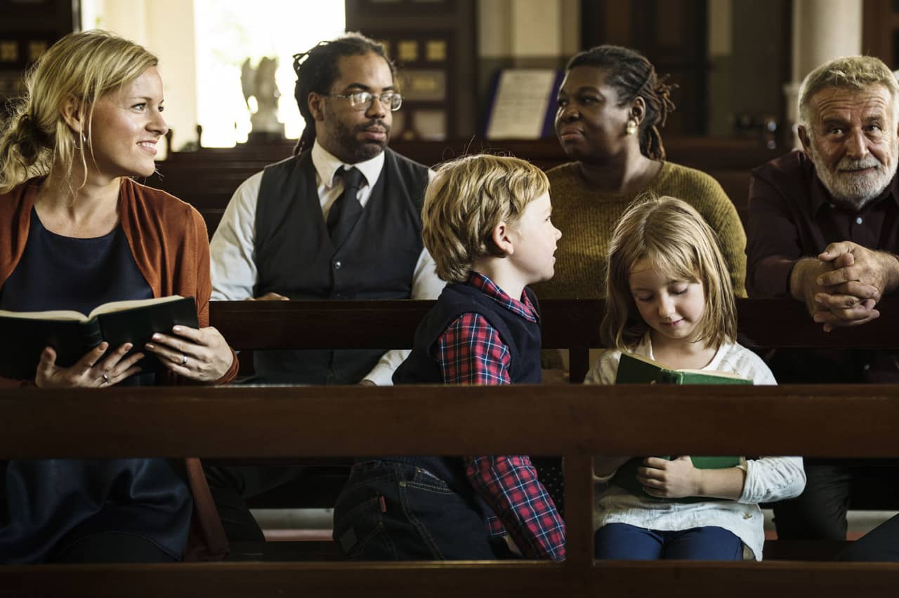

We believe Jesus Christ has something vital to say to every person who lives in and around our town. You are warmly invited to join us.
We are a family of ordinary people from in and around Omagh, brought together by our love for the Lord Jesus Christ and His Word. Whatever your background, and wherever you are on your journey, you will find a warm welcome at our door.
Our services are Bible-centred and Christ-honouring. We gather each Sunday to worship, to be encouraged from the Scriptures, and to grow together in faith. Services start at 12 noon and 7:00 pm every Sunday.
Read more
“Come to me, all you who are weary and burdened, and I will give you rest.”
There are lots of ways to get involved, grow in your faith, and get to know people. Here are a few to start with.
Sunday morning services are followed by refreshments — a relaxed chance to connect with people in your community.
Find out more →An informal and relaxed course for anyone who wants to think about the meaning of life and who Jesus is.
Find out more →An opportunity to pray together and dig deeper into the Bible, discovering the relevance of its message for today.
Find out more →There is something for every age and stage right through the week.
Our worship continues online too — connect with us wherever you are.
The newest messages, pulled in automatically from our YouTube channel.